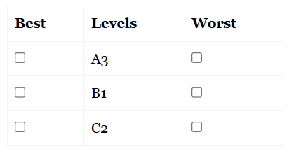

The profile case focuses on evaluating preferences for profiles, which are combinations of different attribute levels. Each profile represents a single choice question, and respondents are asked to identify the most and least preferred attribute levels within that profile. This method helps determine the relative importance of attributes and their levels in shaping preferences.
Suppose we have three attributes (A, B, C), each with three levels:
We can efficiently create 9 balanced profiles using orthogonal arrays:
Example diagram of a profile choice set:

Each profile is presented individually, and respondents select the most and least preferred attribute levels, providing information on how different attribute levels drive preferences.